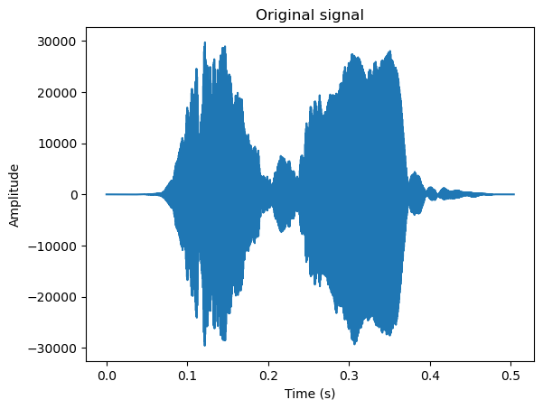
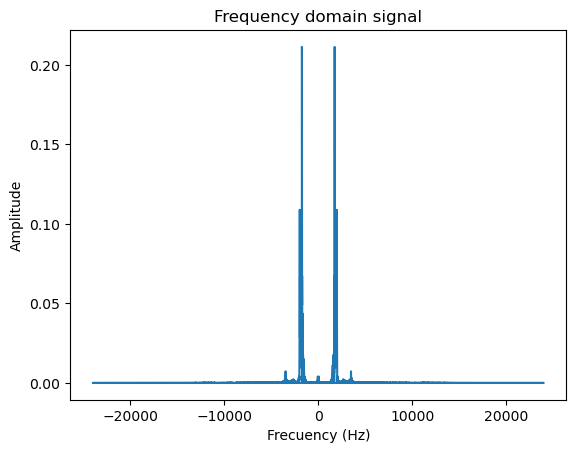
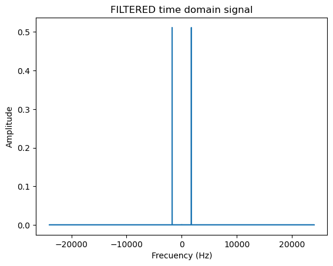
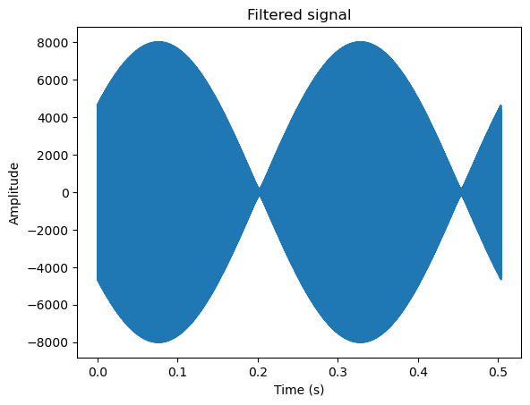

Remoção de ruídos e compactação#
# Imports for Audio signal processing
from scipy.io.wavfile import read, write
import matplotlib.pyplot as plt
import numpy as np
from scipy.fft import fft, fftfreq, ifft
import sys
# converter audio.mp3 para audio.wav, se necessário
"""
from pydub import AudioSegment
sound = AudioSegment.from_mp3("audio.mp3")
sound.export("audio.wav", format="wav")
"""
'\nfrom pydub import AudioSegment\nsound = AudioSegment.from_mp3("audio.mp3")\nsound.export("audio.wav", format="wav")\n'
# Importar e mostrar audio original
# Import the .wav format audio into two variables:
# sampling (int)
# audio signal (numpy array)
sampling, signal = read('audio.wav')
# time duration of the audio
length = signal.shape[0] / sampling
# x axis based on the time duration
time = np.linspace(0., length, signal.shape[0])
# plot do sinal original
plt.plot(time, signal)
plt.xlabel("Time (s)")
plt.ylabel("Amplitude")
plt.title("Original signal")
plt.show()

# Aplicar a transformada de fourier, normalizar e plotar
transform = fft(signal)
# obtain frequencies
xf = fftfreq(transform.size, 1/sampling)
# show transformed signal (frequencies domain)
plt.plot(xf, abs(transform)/np.linalg.norm(transform))
plt.xlabel("Frecuency (Hz)")
plt.ylabel("Amplitude")
plt.title("Frequency domain signal")
plt.show()

# filtrar a transformada do sinal para 40% da amplitude máxima
filtered = np.copy(transform)
filtered[abs(transform) < 0.9 * max(abs(transform))] = 0
# Plotar a transformada filtrada
plt.plot(xf,abs(filtered)/np.linalg.norm(filtered))
plt.xlabel("Frecuency (Hz)")
plt.ylabel("Amplitude")
plt.title("FILTERED time domain signal")
plt.show()

# reconstruir o audio a partir dos dados filtrados e plotar
filtered = ifft(filtered)
# show original signal filtered
plt.plot(time, filtered)
plt.xlabel("Time (s)")
plt.ylabel("Amplitude")
plt.title("Filtered signal")
plt.show()
/home/marcio/anaconda3/lib/python3.12/site-packages/matplotlib/cbook.py:1762: ComplexWarning: Casting complex values to real discards the imaginary part
return math.isfinite(val)
/home/marcio/anaconda3/lib/python3.12/site-packages/matplotlib/cbook.py:1398: ComplexWarning: Casting complex values to real discards the imaginary part
return np.asarray(x, float)

# Criar wav a partir do audio reconstruido
rate = 44100
write('test.wav', rate, filtered.astype(signal.dtype))
/tmp/ipykernel_566962/2202015958.py:4: ComplexWarning: Casting complex values to real discards the imaginary part
write('test.wav', rate, filtered.astype(signal.dtype))
# Exportar wav para mp3
#"""
from pydub import AudioSegment
sound = AudioSegment.from_mp3("test.wav")
sound.export("test.mp3", format="mp3")
#"""
<_io.BufferedRandom name='test.mp3'>